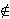

There are several natural generalizations of the original problem
of Diophantus and Fermat. The first of them is
the replacement of number 1,
in the definition of Diophantine m-tuples, by an arbitrary
integer n.
Definition 3.1: Let n be an integer. A set of
m positive integers
{a1, a2, ... ,
am}
is said to have the property D(n)
if
ai · aj + n
is a perfect square for all
1 ≤ i < j ≤ m.
Such a set is called a Diophantine m-tuple
with the property
D(n)
(or D(n)-m-tuple, or
Pn-set of size m).
Several authors considered the problem of the existence of Diophantine
quadruples with the property D(n). This problem is almost
completely solved. In 1985, Brown [21],
Gupta & Singh [22] and
Mohanty & Ramasamy [24]
proved independently the following result,
which gives the first part of the answer.
Theorem 3.1: If n is an integer of the form
n = 4k + 2, then there does not exist a Diophantine
quadruple with the property D(n).
The proof of Theorem 3.1 is very simple. Indeed, assume that
{a1, a2, a3, a4}
has the property D(n). Since the square
of an integer is
≡ 0 or 1 (mod 4), we have that
aiaj
≡ 2 or 3 (mod 4). It implies that none of the
ai is divisible by 4.
Therefore, we may assume that a1
≡ a2 (mod 4). But now we have that
a1a2
≡ 0 or 1 (mod 4), a contradiction.
In 1993, Dujella [44] has given the second
part of the answer.
Theorem 3.2: If an integer n does not have the form
4k + 2 and n

S = {-4, -3, -1, 3, 5, 8, 12, 20}, then there exist at least one
Diophantine quadruple with the property D(n).
For nS, the question of the existence of
Diophantine quadruples with the property D(n) is still
open. The conjecture is that for these values of n there
does not exist a Diophantine quadruple. For n = -1, there are
results which show that some particular Diophantine triples cannot be extended to quadruples
[20, 21,
28, 71,
75, 92,
116, 131,
134, 139,
150, 153,
156, 176,
205, 229,
234].
Dujella & Fuchs [131]
proved that there does not exist a Diophantine quintuple with
the property D(-1), and Dujella, Filipin & Fuchs [150]
proved that there are only finitely many such quadruples.
Theorem 3.2 was proved by considering the following six cases:
n = 4k + 3, n = 8k + 1,
n = 8k + 5,
n = 8k, n = 16k + 4,
n = 16k + 12.
In each of these cases, it is possible to
find a set with the property
D(n) consisted of the four polynomials in k with
integer coefficients. For example, the set
{1, 9k2 + 8k + 1,
9k2 + 14k +6,
36k2 + 44k + 13}
has the property D(4k + 3). The elements from the set S
are exceptions because we can get the sets with nonpositive or
equal elements for some values of k.
Formulas of the similar type were systematically derived in
[56].
Using these formulas, in [69] and
[70], some improvements
of Theorem 3.2
were obtained. It was proved that if
|n| is sufficiently large and n
≡ 1 (mod 8),
or n ≡ 4 (mod 32), or
n ≡ 0 (mod 16),
then there exist at least six, and if
n ≡ 8 (mod 16),
or n ≡ 13, 21 (mod 24), or
n ≡ 3, 7 (mod 12), then there exist at least four distinct Diophantine
quadruples with the property D(n).
Let U denote the set of all integers n, not of the
form 4k + 2, such that there exist at most two distinct
Diophantine quadruples with the property D(n).
An open question is whether the set U is finite or not.
3.2. Diophantine
quintuples with property D(n)
One may ask what is the least positive integer
n1, and what is the greatest negative integer
n2, for which there exist a Diophantine quintuple
with the property D(ni), i = 1,2.
It is known that n1
≤ 256 and
n2
≥ -255,
since the sets {1, 33, 105, 320, 18240} and
{5, 21, 64, 285, 6720} have the property
D(256), and the set {8, 32, 77, 203, 528} has the property
D(-255) ([62,
[68]).
3.3. Estimates for the
size of Diophantine m-tuples
Let n be a nonzero integer. We may ask how large a
set with the property D(n) can be. Let define
Mn =
sup {|S| : S has the property D(n)},
where |S| denotes the number of elements in the set S.
By the results of Chapter 2 we know that
4 ≤ M1 ≤ 5. Recently, Filipin
[163, 164] proved analogous results for n = 4,
i.e. 4 ≤ M4 ≤ 5.
Dujella [107,
123] proved that Mn is finite for all n. More
precisely, it holds:
Theorem 3.3:
Mn
≤ 31 for
|n| ≤ 400, Mn <
15.476 log|n|
for |n| > 400.
In the proof of Theorem 3.3, the numbers of
"large" (greater than |n|3),
"small" (between n2 and |n|3) and
"very small" (less than n2) elements were
estimated separately.
Using a theorem of Bennett on simultaneous approximations of
algebraic numbers and a gap principle, it was proved that
the number of large elements is less than 22 for all nonzero
integers n. For the estimate of the number of small elements,
a weak variant of the gap principle was used to prove that this number
is less than
0.6114 log|n| + 2.158
for all nonzero integers n (and less than
0.6071 log|n| + 2.152 for |n| > 400).
Finally, in the estimate of the number of very small elements, a large
sieve method due to Gallagher and a result of Vinogradov on
double sums of Legendre's symbols were used to prove that this number
is less than
11.006 log|n|
for |n| > 400.
It is easy to check that there are at most 5 very small elements
for n ≤ 400.
Putting all these estimates together, we obtain Theorem 3.3.
Recently, Dujella and Luca [132] proved that
Mp < 3 . 2168 holds for all primes p.
 S, the question of the existence of
Diophantine quadruples with the property D(n) is still
open. The conjecture is that for these values of n there
does not exist a Diophantine quadruple. For n = -1, there are
results which show that some particular Diophantine triples cannot be extended to quadruples
[20, 21,
28, 71,
75, 92,
116, 131,
134, 139,
150, 153,
156, 176,
205, 229,
234].
Dujella & Fuchs [131]
proved that there does not exist a Diophantine quintuple with
the property D(-1), and Dujella, Filipin & Fuchs [150]
proved that there are only finitely many such quadruples.
S, the question of the existence of
Diophantine quadruples with the property D(n) is still
open. The conjecture is that for these values of n there
does not exist a Diophantine quadruple. For n = -1, there are
results which show that some particular Diophantine triples cannot be extended to quadruples
[20, 21,
28, 71,
75, 92,
116, 131,
134, 139,
150, 153,
156, 176,
205, 229,
234].
Dujella & Fuchs [131]
proved that there does not exist a Diophantine quintuple with
the property D(-1), and Dujella, Filipin & Fuchs [150]
proved that there are only finitely many such quadruples.